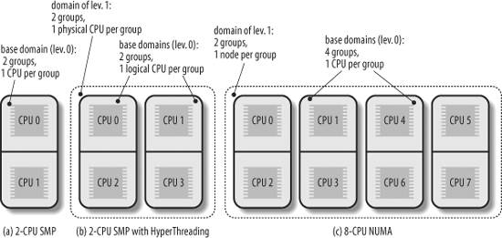

{% include JB/setup %}
{% raw %}
<div>


<a name="understandlk-CHP-7-SECT-5"></a>
<h3 class="docSection1Title">7.5. Runqueue Balancing in Multiprocessor Systems</h3><a name="IDX-CHP-7-1914"></a>
<a name="IDX-CHP-7-1915"></a>
<p class="docText1">We have seen in <a class="pcalibre5 docLink pcalibre1" href="understandlk-CHP-4.html#understandlk-CHP-4">Chapter 4</a> that Linux sticks to the Symmetric Multiprocessing model (SMP<a name="IDX-CHP-7-1916"></a> 
); this means, essentially, that the kernel should not have any bias toward one CPU with respect to the others. However, multiprocessor machines come in many different flavors, and the scheduler behaves differently depending on the hardware characteristics. In particular, we will consider the following three types of multiprocessor machines:</p>
<dl class="docText1"><dt class="calibre7"><br class="calibre7"/><p class="calibre14"><span class="docPubcolor"><span class="docEmphasis">Classic multiprocessor architecture</span></span></p></dt>
<dd class="calibre20"><p class="docList">Until recently, this was the most common architecture for multiprocessor machines. These machines have a common set of RAM chips shared by all CPUs.</p></dd><dt class="calibre7"><br class="calibre7"/><p class="calibre14"><span class="docPubcolor"><span class="docEmphasis">Hyper-threading</span></span></p></dt>
<dd class="calibre20"><p class="docList">A hyper-threaded chip is a microprocessor that executes several threads of execution at once; it includes several copies of the internal registers and quickly switches between them. This technology, which was invented by Intel, allows the processor to exploit the machine cycles to execute another thread while the current thread is stalled for a memory access. A hyper-threaded physical CPU is seen by Linux as several different logical CPUs.</p></dd><dt class="calibre7"><br class="calibre7"/><p class="calibre14"><span class="docPubcolor"><span class="docEmphasis">NUMA</span></span></p></dt>
<dd class="calibre20"><p class="docList">CPUs and RAM chips are grouped in local "nodes" (usually a node includes one CPU and a few RAM chips). The memory arbiter (a special circuit that serializes the accesses to RAM performed by the CPUs in the system, see the section "<a class="pcalibre5 docLink pcalibre1" href="understandlk-CHP-2-SECT-1.html#understandlk-CHP-2-SECT-1">Memory Addresses</a>" in <a class="pcalibre5 docLink pcalibre1" href="understandlk-CHP-2.html#understandlk-CHP-2">Chapter 2</a>) is a bottleneck for the performance of the classic multiprocessor systems. In a NUMA architecture, when a CPU accesses a "local" RAM chip inside its own node, there is little or no contention, thus the access is usually fast; on the other hand, accessing a "remote" RAM chip outside of its node is much slower. We'll mention in the section "<a class="pcalibre5 docLink pcalibre1" href="understandlk-CHP-8-SECT-1.html#understandlk-CHP-8-SECT-1.2">Non-Uniform Memory Access (NUMA)</a>" in <a class="pcalibre5 docLink pcalibre1" href="understandlk-CHP-8.html#understandlk-CHP-8">Chapter 8</a> how the Linux kernel memory allocator supports NUMA architectures.</p></dd></dl>
<p class="docText1">These basic kinds of multiprocessor systems are often combined. For instance, a motherboard that includes two different hyper-threaded CPUs is seen by the kernel as four logical CPUs.</p>
<p class="docText1">As we have seen in the previous section, the <tt class="calibre25">schedule( )</tt> function picks the new process to run from the runqueue of the local CPU. Therefore, a given CPU can execute only the runnable processes that are contained in the corresponding runqueue. On the other hand, a runnable process is always stored in exactly one runqueue: no runnable process ever appears in two or more runqueues. Therefore, until a process remains runnable, it is usually bound to one CPU.</p>
<p class="docText1">This design choice is usually beneficial for system performance, because the hardware cache of every CPU is likely to be filled with data owned by the runnable processes in the runqueue. In some cases, however, binding a runnable process to a given CPU might induce a severe performance penalty. For instance, consider a large number of batch processes that make heavy use of the CPU: if most of them end up in the same runqueue, one CPU in the system will be overloaded, while the others will be nearly idle.</p>
<p class="docText1">Therefore, the kernel periodically checks whether the workloads of the runqueues are balanced and, if necessary, moves some process from one runqueue to another. However, to get the best performance from a multiprocessor system, the load balancing algorithm should take into consideration the topology of the CPUs in the system. Starting from kernel version 2.6.7, Linux sports a sophisticated runqueue balancing algorithm based on the notion of "scheduling domains." Thanks to the scheduling domains, the algorithm can be easily tuned for all kinds of existing multiprocessor architectures (and even for recent architectures such as those based on the "multi-core" microprocessors).</p>
<a name="understandlk-CHP-7-SECT-5.1"></a>
<h4 class="docSection2Title">7.5.1. Scheduling Domains</h4><a name="IDX-CHP-7-1917"></a>
<p class="docText1">Essentially, a <span class="docEmphasis">scheduling domain</span> is a set of CPUs whose workloads should be kept balanced by the kernel. Generally speaking, scheduling domains<a name="IDX-CHP-7-1918"></a> 
 are hierarchically organized: the top-most scheduling domain, which usually spans all CPUs in the system, includes children scheduling domains, each of which include a subset of the CPUs. Thanks to the hierarchy of scheduling domains, workload balancing can be done in a rather efficient way.</p>
<p class="docText1">Every scheduling domain is partitioned, in turn, in one or more <span class="docEmphasis">groups</span>, each of which represents a subset of the CPUs of the scheduling domain. Workload balancing is always done between groups of a scheduling domain. In other words, a process is moved from one CPU to another only if the total workload of some group in some scheduling domain is significantly lower than the workload of another group in the same scheduling domain.</p>
<p class="docText1"><a class="pcalibre5 docLink pcalibre1" href="#understandlk-CHP-7-FIG-2">Figure 7-2</a> illustrates three examples of scheduling domain hierarchies, corresponding to the three main architectures of multiprocessor machines.</p>
<a name="understandlk-CHP-7-FIG-2"></a><p class="calibre14"><center class="calibre8">
<h5 class="docFigureTitle">Figure 7-2. Three examples of scheduling domain hierarchies</h5>
</center></p><br class="calibre7"/>
<p class="docText1"><a class="pcalibre5 docLink pcalibre1" href="#understandlk-CHP-7-FIG-2">Figure 7-2</a> (a) represents a hierarchy composed by a single scheduling domain for a 2-CPU classic multiprocessor architecture. The scheduling domain includes only two groups, each of which includes one CPU.</p>
<p class="docText1"><a class="pcalibre5 docLink pcalibre1" href="#understandlk-CHP-7-FIG-2">Figure 7-2</a> (b) represents a two-level hierarchy for a 2-CPU multiprocessor box with hyper-threading technology. The top-level scheduling domain spans all four logical CPUs in the system, and it is composed by two groups. Each group of the top-level domain corresponds to a child scheduling domain and spans a physical CPU. The bottom-level scheduling domains (also called <span class="docEmphasis">base scheduling domains</span><a name="IDX-CHP-7-1919"></a> 
) include two groups, one for each logical CPU.</p>
<p class="docText1">Finally, <a class="pcalibre5 docLink pcalibre1" href="#understandlk-CHP-7-FIG-2">Figure 7-2</a> (c) represents a two-level hierarchy for an 8-CPU NUMA architecture with two nodes and four CPUs per node. The top-level domain is organized in two groups, each of which corresponds to a different node. Every base scheduling domain spans the CPUs inside a single node and has four groups, each of which spans a single CPU.</p>
<p class="docText1">Every scheduling domain is represented by a <tt class="calibre25">sched_domain</tt> descriptor, while every group inside a scheduling domain is represented by a <tt class="calibre25">sched_group</tt> descriptor. Each <tt class="calibre25">sched_domain</tt> descriptor includes a field <tt class="calibre25">groups</tt>, which points to the first element in a list of group descriptors. Moreover, the <tt class="calibre25">parent</tt> field of the <tt class="calibre25">sched_domain</tt> structure points to the descriptor of the parent scheduling domain, if any.</p>
<p class="docText1">The <tt class="calibre25">sched_domain</tt> descriptors of all physical CPUs in the system are stored in the per-CPU variable <tt class="calibre25">phys_domains</tt>. If the kernel does not support the hyper-threading technology, these domains are at the bottom level of the domain hierarchy, and the <tt class="calibre25">sd</tt> fields of the runqueue descriptors point to themthat is, they are the base scheduling domains. Conversely, if the kernel supports the hyper-threading technology, the bottom-level scheduling domains are stored in the per-CPU variable <tt class="calibre25">cpu_domains</tt>.</p>
<a name="understandlk-CHP-7-SECT-5.2"></a>
<h4 class="docSection2Title">7.5.2. The rebalance_tick( ) Function</h4><a name="IDX-CHP-7-1920"></a>
<a name="IDX-CHP-7-1921"></a>
<a name="IDX-CHP-7-1922"></a>
<a name="IDX-CHP-7-1923"></a>
<a name="IDX-CHP-7-1924"></a>
<a name="IDX-CHP-7-1925"></a>
<a name="IDX-CHP-7-1926"></a>
<a name="IDX-CHP-7-1927"></a>
<p class="docText1">To keep the runqueues in the system balanced, the <tt class="calibre25">rebalance_tick( )</tt> function is invoked by <tt class="calibre25">scheduler_tick( )</tt> once every tick. It receives as its parameters the index <tt class="calibre25">this_cpu</tt> of the local CPU, the address <tt class="calibre25">this_rq</tt> of the local runqueue, and a flag, <tt class="calibre25">idle</tt>, which can assume the following values:</p>
<dl class="docText1"><dt class="calibre7"><br class="calibre7"/><p class="calibre14"><span class="docPubcolor"><span class="docPubcolor"><span class="docMonofont">SCHED_IDLE</span></span></span></p></dt>
<dd class="calibre20"><p class="docList">The CPU is currently idle, that is, <tt class="calibre25">current</tt> is the <span class="docEmphasis">swapper</span> process.</p></dd><dt class="calibre7"><br class="calibre7"/><p class="calibre14"><span class="docPubcolor"><span class="docPubcolor"><span class="docMonofont">NOT_IDLE</span></span></span></p></dt>
<dd class="calibre20"><p class="docList">The CPU is not currently idle, that is, <tt class="calibre25">current</tt> is not the <span class="docEmphasis">swapper</span> process.</p></dd></dl>
<p class="docText1">The <tt class="calibre25">rebalance_tick( )</tt> function determines first the number of processes in the runqueue and updates the runqueue's average workload; to do this, the function accesses the <tt class="calibre25">nr_running</tt> and <tt class="calibre25">cpu_load</tt> fields of the runqueue descriptor.</p>
<p class="docText1">Then, <tt class="calibre25">rebalance_tick( )</tt> starts a loop over all scheduling domains in the path from the base domain (referenced by the <tt class="calibre25">sd</tt> field of the local runqueue descriptor) to the top-level domain. In each iteration the function determines whether the time has come to invoke the <tt class="calibre25">load_balance( )</tt> function, thus executing a rebalancing operation on the scheduling domain. The value of <tt class="calibre25">idle</tt> and some parameters stored in the <tt class="calibre25">sched_domain</tt> descriptor determine the frequency of the invocations of <tt class="calibre25">load_balance( )</tt>. If <tt class="calibre25">idle</tt> is equal to <tt class="calibre25">SCHED_IDLE</tt>, then the runqueue is empty, and <tt class="calibre25">rebalance_tick( )</tt> invokes <tt class="calibre25">load_balance( )</tt> quite often (roughly once every one or two ticks for scheduling domains corresponding to logical and physical CPUs). Conversely, if <tt class="calibre25">idle</tt> is equal to <tt class="calibre25">NOT_IDLE</tt>, <tt class="calibre25">rebalance_tick( )</tt> invokes <tt class="calibre25">load_balance( )</tt> sparingly (roughly once every 10 milliseconds for scheduling domains corresponding to logical CPUs, and once every 100 milliseconds for scheduling domains corresponding to physical CPUs).</p>
<a name="understandlk-CHP-7-SECT-5.3"></a>
<h4 class="docSection2Title">7.5.3. The load_balance( ) Function</h4><a name="IDX-CHP-7-1928"></a>
<a name="IDX-CHP-7-1929"></a>
<a name="IDX-CHP-7-1930"></a>
<p class="docText1">The <tt class="calibre25">load_balance( )</tt> function checks whether a scheduling domain is significantly unbalanced; more precisely, it checks whether unbalancing can be reduced by moving some processes from the busiest group to the runqueue of the local CPU. If so, the function attempts this migration. It receives four parameters:</p>
<dl class="docText1"><dt class="calibre7"><br class="calibre7"/><p class="calibre14"><span class="docPubcolor"><span class="docPubcolor"><span class="docMonofont">this_cpu</span></span></span></p></dt>
<dd class="calibre20"><p class="docList">The index of the local CPU</p></dd><dt class="calibre7"><br class="calibre7"/><p class="calibre14"><span class="docPubcolor"><span class="docPubcolor"><span class="docMonofont">this_rq</span></span></span></p></dt>
<dd class="calibre20"><p class="docList">The address of the descriptor of the local runqueue</p></dd><dt class="calibre7"><br class="calibre7"/><p class="calibre14"><span class="docPubcolor"><span class="docPubcolor"><span class="docMonofont">sd</span></span></span></p></dt>
<dd class="calibre20"><p class="docList">Points to the descriptor of the scheduling domain to be checked</p></dd><dt class="calibre7"><br class="calibre7"/><p class="calibre14"><span class="docPubcolor"><span class="docPubcolor"><span class="docMonofont">idle</span></span></span></p></dt>
<dd class="calibre20"><p class="docList">Either <tt class="calibre25">SCHED_IDLE</tt> (local CPU is idle) or <tt class="calibre25">NOT_IDLE</tt></p></dd></dl>
<p class="docText1">The function performs the following operations:</p>
<div class="calibre44"><ol class="docList1" type="1"><li class="calibre12"><div class="calibre45"><p class="docList">Acquires the <tt class="calibre25">this_rq-&gt;lock</tt> spin lock.</p></div></li><li class="calibre12"><div class="calibre45"><p class="docList">Invokes the <tt class="calibre25">find_busiest_group( )</tt> function to analyze the workloads of the groups inside the scheduling domain. The function returns the address of the <tt class="calibre25">sched_group</tt> descriptor of the busiest group, provided that this group does not include the local CPU; in this case, the function also returns the number of processes to be moved into the local runqueue to restore balancing. On the other hand, if either the busiest group includes the local CPU or all groups are essentially balanced, the function returns <tt class="calibre25">NULL</tt>. This procedure is not trivial, because the function tries to filter the statistical fluctuations in the workloads.</p></div></li><li class="calibre12"><div class="calibre45"><p class="docList">If <tt class="calibre25">find_busiest_group( )</tt> did not find a group not including the local CPU that is significantly busier than the other groups in the scheduling domain, the function releases the <tt class="calibre25">this_rq-&gt;lock</tt> spin lock, tunes the parameters in the scheduling domain descriptor so as to delay the next invocation of <tt class="calibre25">load_balance( )</tt> on the local CPU, and terminates.</p></div></li><li class="calibre12"><div class="calibre45"><p class="docList">Invokes the <tt class="calibre25">find_busiest_queue( )</tt> function to find the busiest CPUs in the group found in step 2. The function returns the descriptor address <tt class="calibre25">busiest</tt> of the corresponding runqueue.</p></div></li><li class="calibre12"><div class="calibre45"><p class="docList">Acquires a second spin lock, namely the <tt class="calibre25">busiest-&gt;lock</tt> spin lock. To prevent deadlocks, this has to be done carefully: the <tt class="calibre25">this_rq-&gt;lock</tt> is first released, then the two locks are acquired by increasing CPU indices.</p></div></li><li class="calibre12"><div class="calibre45"><p class="docList">Invokes the <tt class="calibre25">move_tasks( )</tt> function to try moving some processes from the <tt class="calibre25">busiest</tt> runqueue to the local runqueue <tt class="calibre25">this_rq</tt> (see the next section).</p></div></li><li class="calibre12"><div class="calibre45"><p class="docList">If the <tt class="calibre25">move_task( )</tt> function failed in migrating some process to the local runqueue, the scheduling domain is still unbalanced. Sets to 1 the <tt class="calibre25">busiest-&gt;active_balance</tt> flag and wakes up the <span class="docEmphasis">migration</span><a name="IDX-CHP-7-1931"></a> 
 kernel thread whose descriptor is stored in <tt class="calibre25">busiest-&gt;migration_thread</tt>. The <span class="docEmphasis">migration</span> kernel thread walks the chain of the scheduling domain, from the base domain of the <tt class="calibre25">busiest</tt> runqueue to the top domain, looking for an idle CPU. If an idle CPU is found, the kernel thread invokes <tt class="calibre25">move_tasks( )</tt> to move one process into the idle runqueue.</p></div></li><li class="calibre12"><div class="calibre45"><p class="docList">Releases the <tt class="calibre25">busiest-&gt;lock</tt> and <tt class="calibre25">this_rq-&gt;lock</tt> spin locks.</p></div></li><li class="calibre12"><div class="calibre45"><p class="docList">Terminates.</p></div></li></ol></div>
<a name="understandlk-CHP-7-SECT-5.4"></a>
<h4 class="docSection2Title">7.5.4. The move_tasks( ) Function</h4><a name="IDX-CHP-7-1932"></a>
<a name="IDX-CHP-7-1933"></a>
<a name="IDX-CHP-7-1934"></a>
<p class="docText1">The <tt class="calibre25">move_tasks( )</tt> function moves processes from a source runqueue to the local runqueue. It receives six parameters: <tt class="calibre25">this_rq</tt> and <tt class="calibre25">this_cpu</tt> (the local runqueue descriptor and the local CPU index), <tt class="calibre25">busiest</tt> (the source runqueue descriptor), <tt class="calibre25">max_nr_move</tt> (the maximum number of processes to be moved), <tt class="calibre25">sd</tt> (the address of the scheduling domain descriptor in which this balancing operation is carried on), and the <tt class="calibre25">idle</tt> flag (beside <tt class="calibre25">SCHED_IDLE</tt> and <tt class="calibre25">NOT_IDLE</tt>, this flag can also be set to <tt class="calibre25">NEWLY_IDLE</tt> when the function is indirectly invoked by <tt class="calibre25">idle_balance( )</tt>; see the section "<a class="pcalibre5 docLink pcalibre1" href="understandlk-CHP-7-SECT-4.html#understandlk-CHP-7-SECT-4.4">The schedule( ) Function</a>" earlier in this chapter).</p>
<p class="docText1">The function first analyzes the expired processes of the <tt class="calibre25">busiest</tt> runqueue, starting from the higher priority ones. When all expired processes have been scanned, the function scans the active processes of the <tt class="calibre25">busiest</tt> runqueue. For each candidate process, the function invokes <tt class="calibre25">can_migrate_task( )</tt>, which returns 1 if all the following conditions hold:</p>
<ul class="calibre11"><li class="calibre12"><p class="docText1">The process is not being currently executed by the remote CPU.</p></li><li class="calibre12"><p class="docText1">The local CPU is included in the <tt class="calibre25">cpus_allowed</tt> bitmask of the process descriptor.</p></li><li class="calibre12"><p class="docText1">At least one of the following holds:</p><ul class="calibre61"><li class="calibre12"><p class="docText1">The local CPU is idle. If the kernel supports the hyper-threading technology, all logical CPUs in the local physical chip must be idle.</p></li><li class="calibre12"><p class="docText1">The kernel is having trouble in balancing the scheduling domain, because repeated attempts to move processes have failed.</p></li><li class="calibre12"><p class="docText1">The process to be moved is not "cache hot" (it has not recently executed on the remote CPU, so one can assume that no data of the process is included in the hardware cache of the remote CPU).</p></li></ul></li></ul>
<p class="docText1">If <tt class="calibre25">can_migrate_task( )</tt> returns the value 1, <tt class="calibre25">move_tasks( )</tt> invokes the <tt class="calibre25">pull_task( )</tt> function to move the candidate process to the local runqueue. Essentially, <tt class="calibre25">pull_task( )</tt> executes <tt class="calibre25">dequeue_task( )</tt> to remove the process from the remote runqueue, then executes <tt class="calibre25">enqueue_task( )</tt> to insert the process in the local runqueue, and finally, if the process just moved has higher dynamic priority than <tt class="calibre25">current</tt>, invokes <tt class="calibre25">resched_task( )</tt> to preempt the current process of the local CPU.</p>
<a href="31071535.html"></a>
<br class="calibre7"/>

</div>

{% endraw %}

